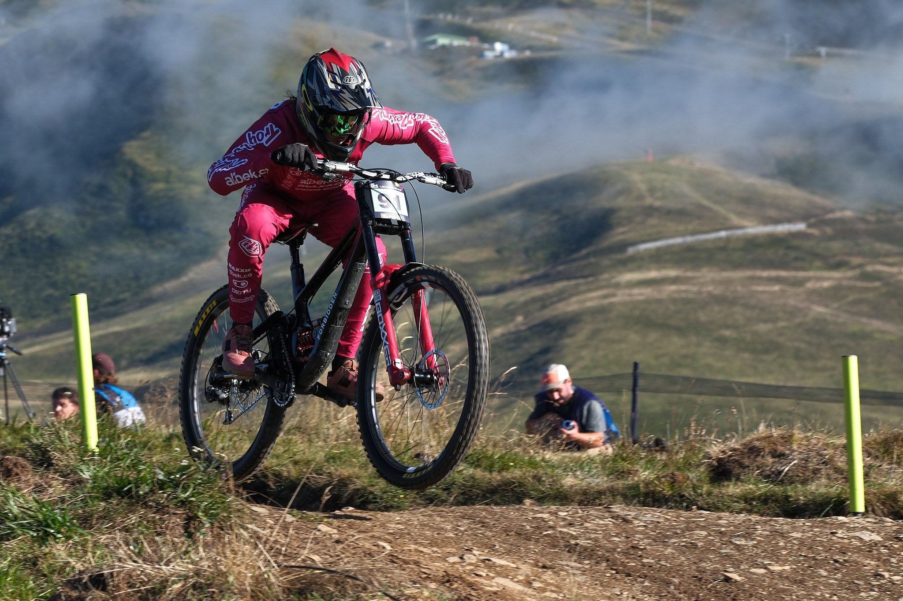
Loudenvielle 2024 - DH World Cup - ISO 160 1/640s f/5 90mm - FUJIFILM XT-5
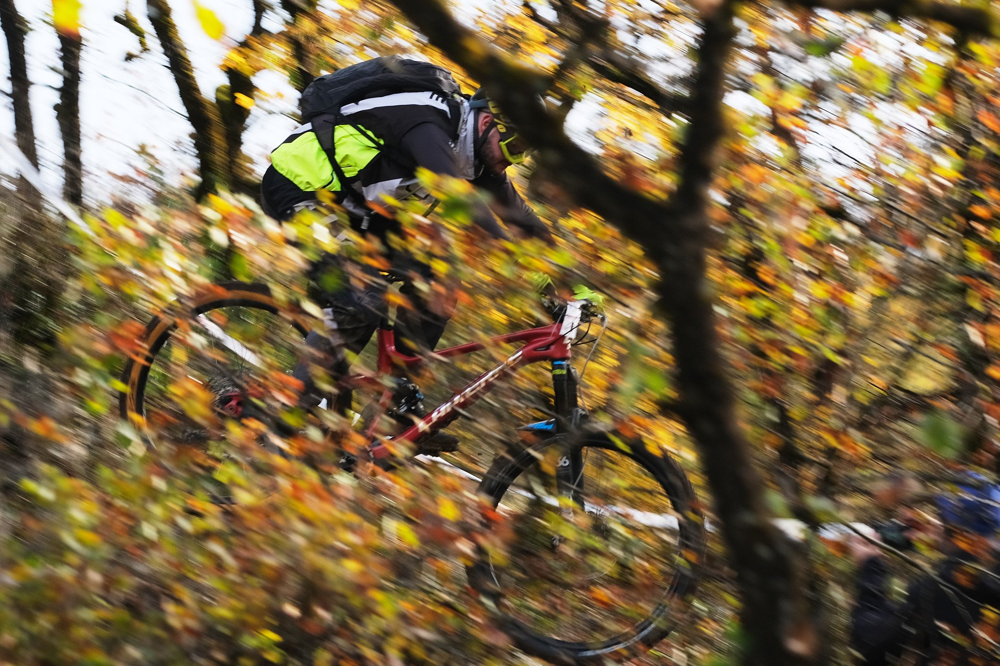
Lot (46) - ISO 320 1/160s f/4.5 90mm - FUJIFILM X-S10
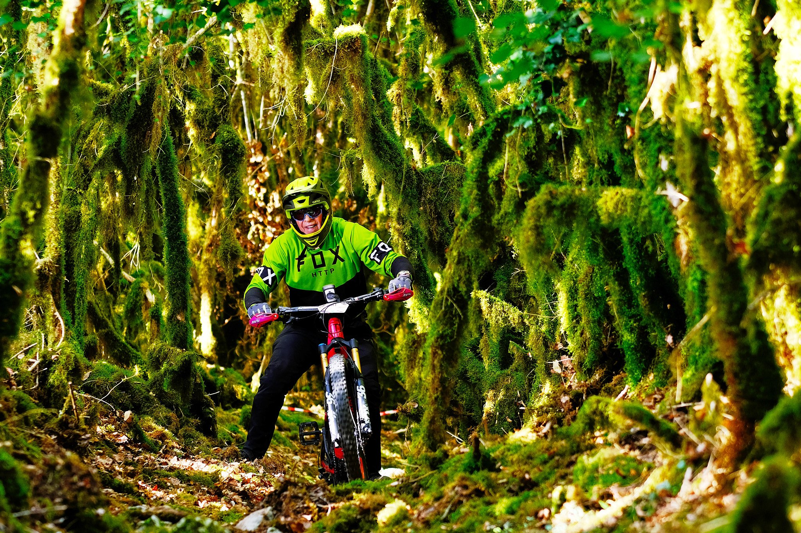
Lot (46) - Flash déporté - ISO 200 1/140s f/2.2 90 mm - FUJIFILM X-S10
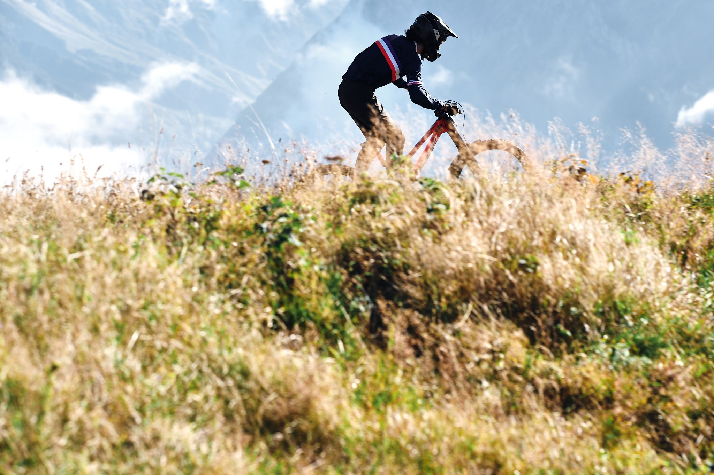
Loudenvielle 2024 - DH World Cup - ISO 160 1/850s f/5.6 90mm - FUJIFILM XT-5
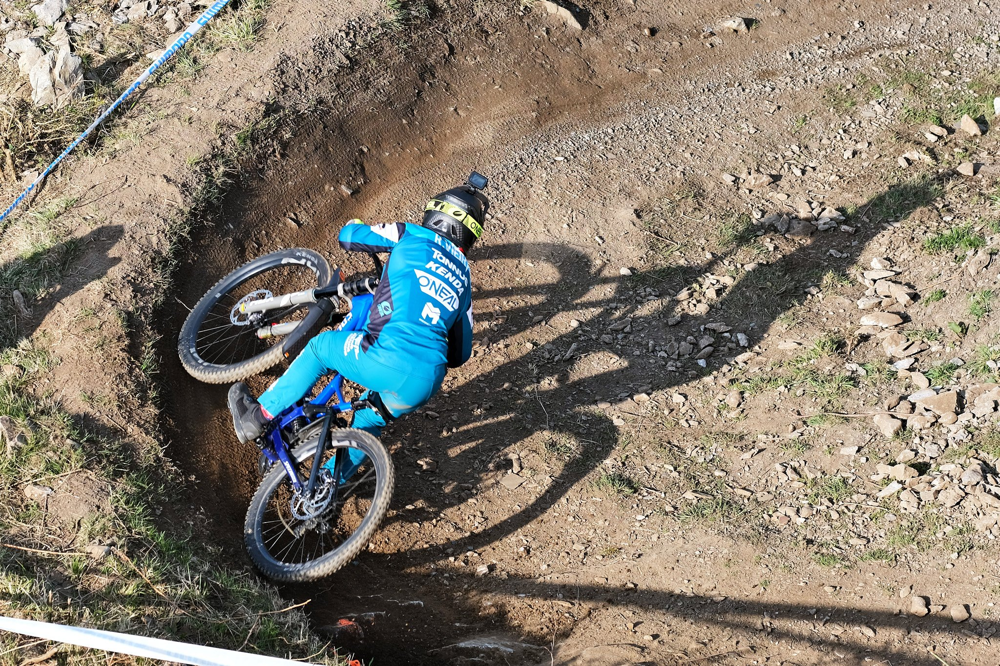
Lourdes 2022 - DH World Cup - ISO 160 1/680s f/4 90mm - FUJIFILM X-S10
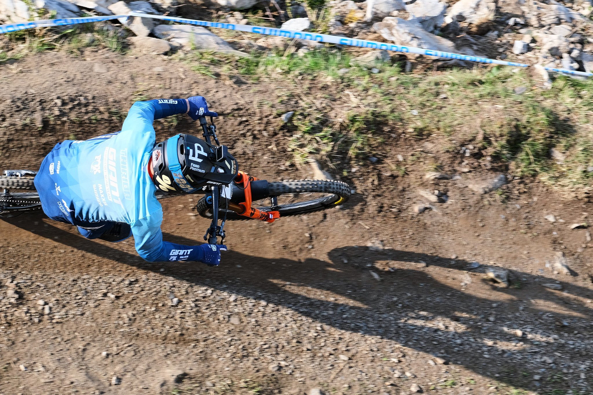
Lourdes 2022 - DH World Cup - ISO 32 1/600s f/4.5 90mm - FUJIFILM X-S10
 Loudenvielle 2024 - DH World Cup - ISO 320 1/850s f/5.6 8mm - FUJIFILM XT-5
Loudenvielle 2024 - DH World Cup - ISO 320 1/850s f/5.6 8mm - FUJIFILM XT-5
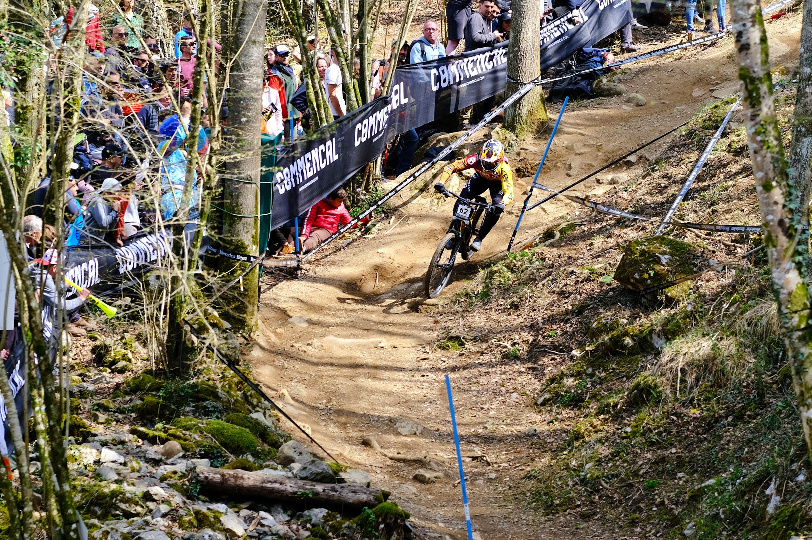
Lourdes 2022 - DH World Cup - ISO 160 1/400s f/3.2 90mm - FUJIFILM X-S10
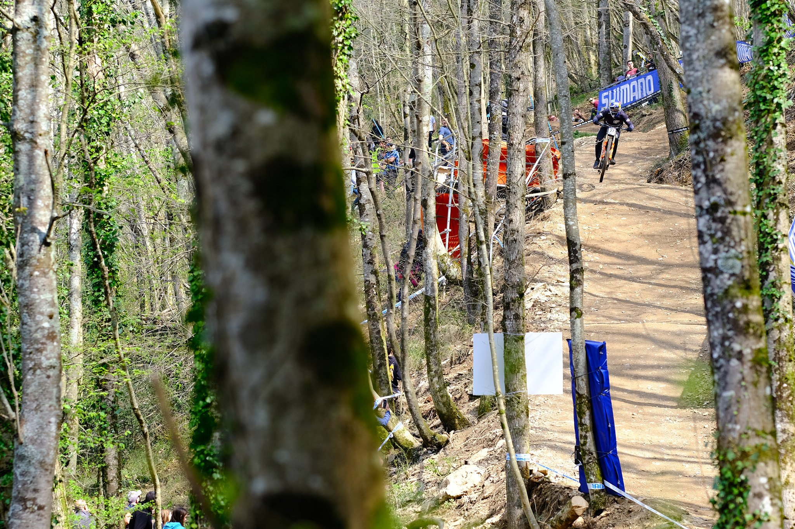
Lourdes 2022 - DH World Cup - ISO 160 1/420s f/3.2 90mm - FUJIFILM X-S10
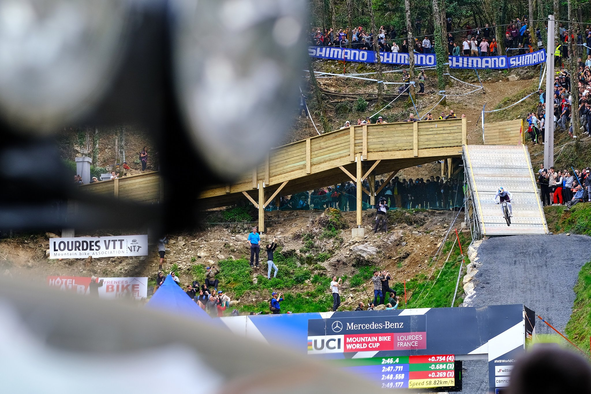
Lourdes 2022 - DH World Cup - ISO 160 1/400s f/3.6 90mm - FUJIFILM X-S10
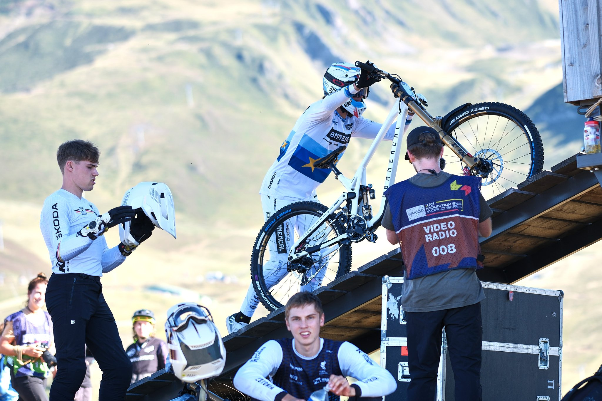
Loudenvielle 2024 - DH World Cup - ISO 160 1/680s f/5.6 90mm - FUJIFILM XT-5
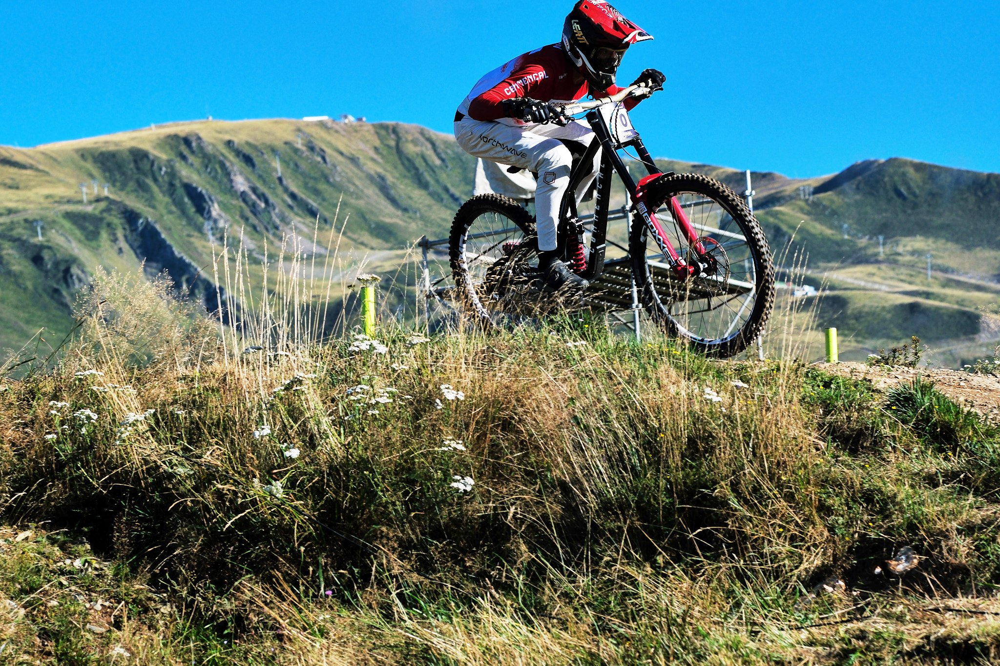
Loudenvielle 2024 - DH World Cup - ISO 160 1/1900s f/5.6 90mm - FUJIFILM XT-5
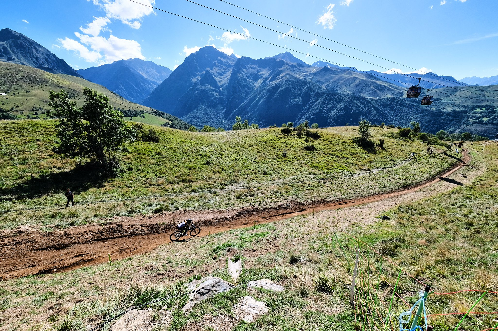
Loudenvielle 2024 - DH World Cup - ISO 320 1/1100s f/5.6 8mm - FUJIFILM XT-5
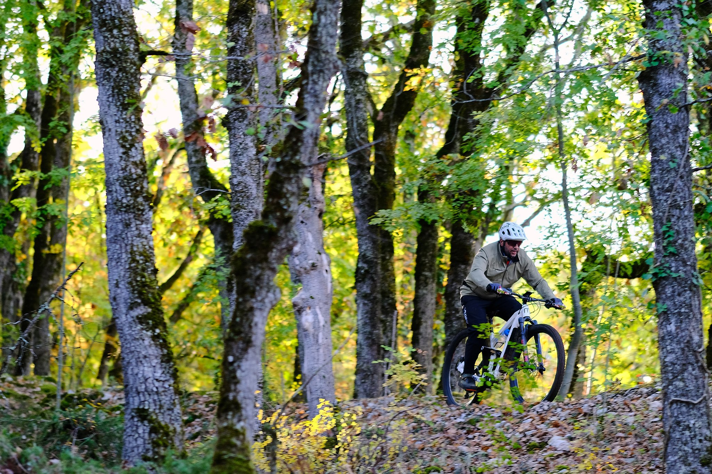
Lot (46) - Flash déporté - ISO 500 1/125s f/2 90mm - FUJIFILM X-S10
❮
 ❯
❯